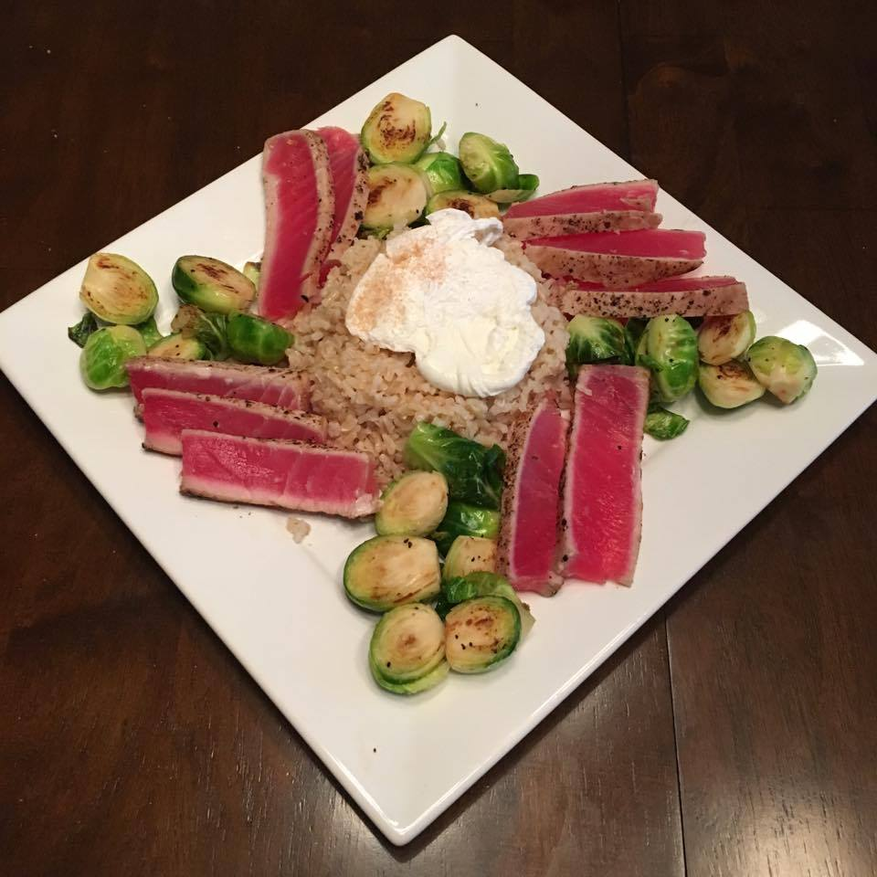

I am a recent graduate of Carnegie Mellon University. I graduated with a Bachelor of Science in Business Administration from the Tepper School of Business. My concentration was Business Technology, and I minored in Game Design. My passions lie at the intersection of business, technology, and the fine arts. My professional pursuits naturally lie in the areas of Project Management, Software Development, and Game Design. You can learn of my experience from my resume (which you can get by contacting me). Additionally, I have a portfolio, which includes not only this website, but a few games and a large-scale project called Booth (an extra-curricular unique to Carnegie Mellon). If you are just interested in what I do in general, you can check out my projects as well!
My Resume
If you would like to see my resume, you can visit my contact portal, where you can email me or also be directed to my different web-profiles. I worked 2 summers as a devops intern and then as a software development intern at the Gelber Group - a trading firm in Chicago. I was invited to join as a full-time empoloyee on the dev team, and worked from May of 2017 until October: when I decided to leave to pursue my career interests.
As well as having programming experience, I also have experience with web-apps and web-design (as seen on this very website). Additionally I have experience in project management, managing a team of over 75 people, and balancing a budget of just over $12,000 (you can read about that here). I am very accustomed to working on teams, and prefer group work to individual work. If you'd like to know more about me, you can just browse this website, and I would be very appreciative of any feedback you can give.
Newline

Morbi eleifend tempus velit sed vulputate. Class aptent taciti sociosqu ad litora torquent per conubia nostra, per inceptos himenaeos. Ut nec nibh quis nunc euismod fringilla. Etiam id elit ut quam varius iaculis. Vestibulum lorem risus, pellentesque at dui in, lobortis porta purus. Morbi a imperdiet elit. Nulla vulputate tempor purus mattis tincidunt. Mauris pulvinar, enim imperdiet tincidunt gravida, velit dui mollis lacus, sit amet sollicitudin lacus tortor ut purus. Cras et mi vel elit dapibus dictum id vel eros. Maecenas in dui cursus, tempor velit non, consectetur leo. Integer eu purus non neque efficitur feugiat sed et erat. Cras facilisis est lacus, in luctus lorem consectetur a. Ut ultricies fringilla metus, vitae pulvinar nulla accumsan ut. Ut pharetra, nulla id consequat porta, felis lectus luctus metus, ac finibus tellus ex nec tortor.